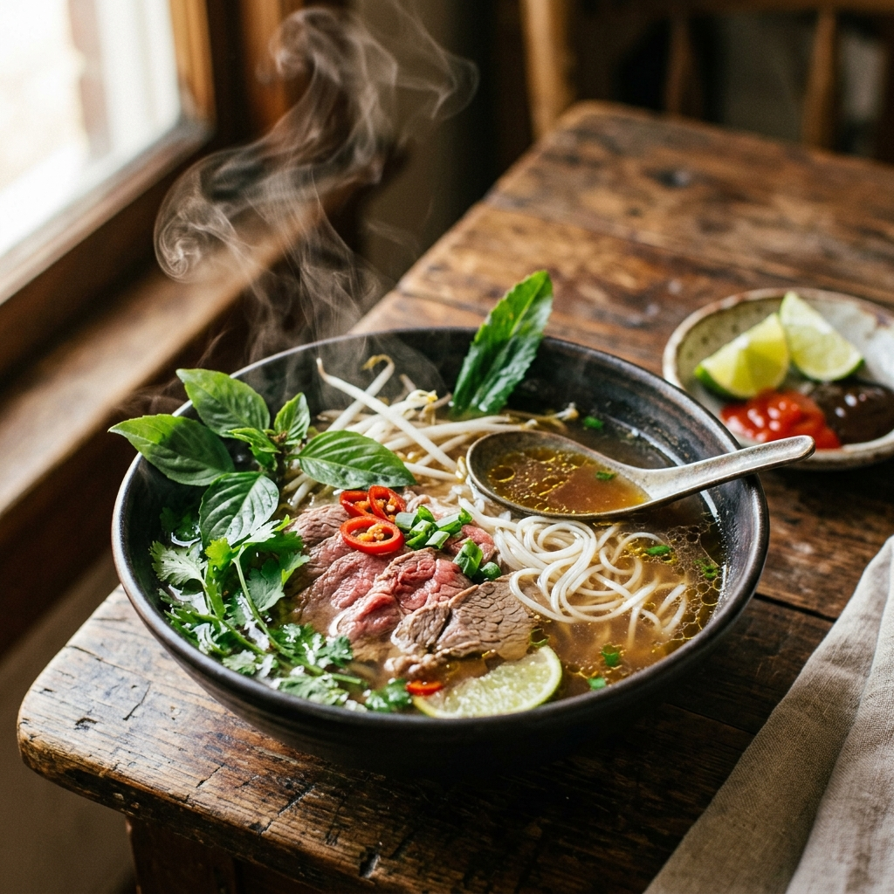
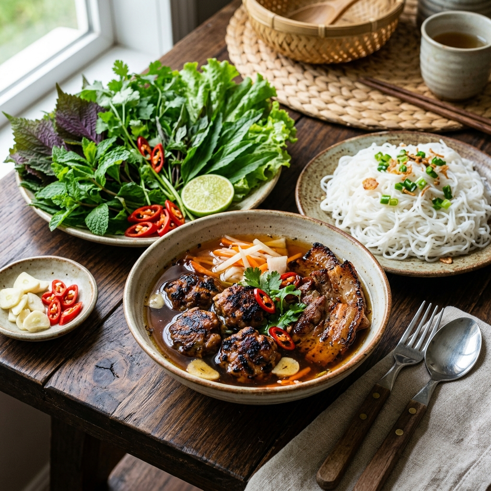
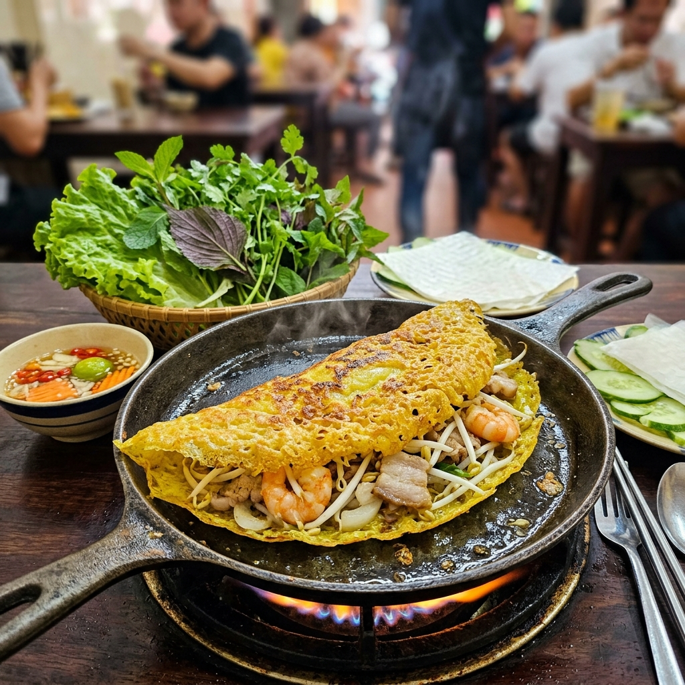
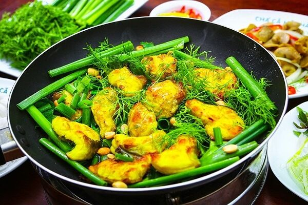
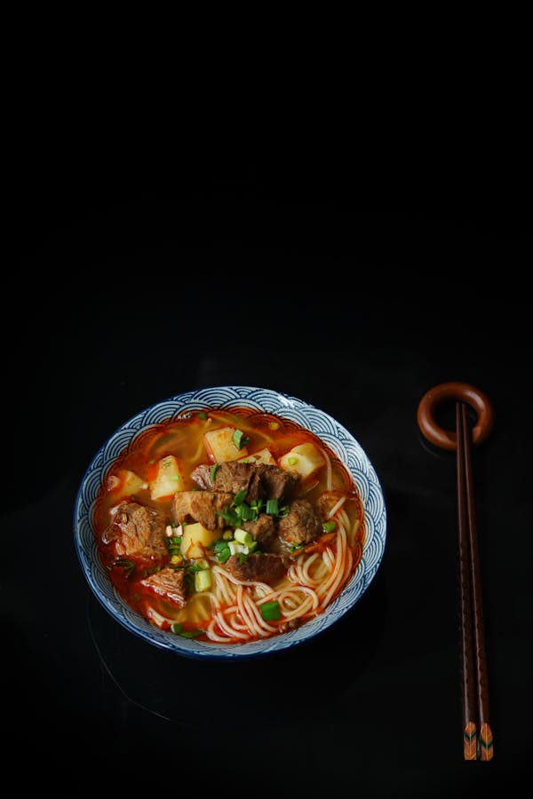
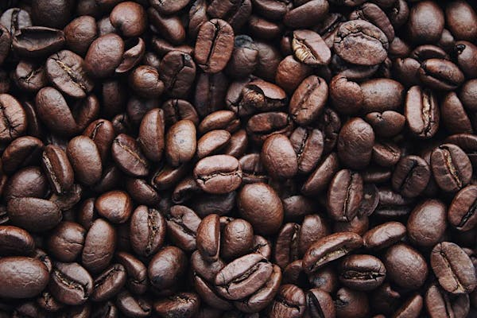
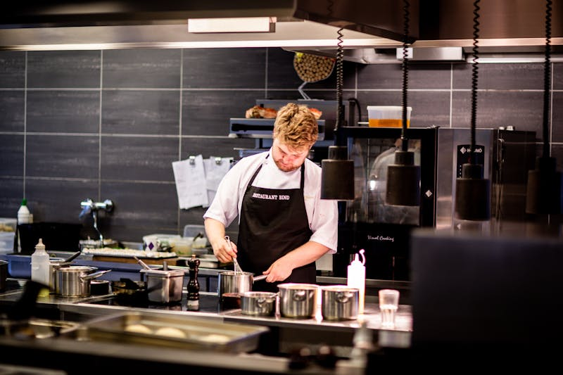

Âm Thực Việt - Hồn Quê Việt
Nơi tinh hoa di sản hội tụ trong từng hơi thở của hương vị truyền thống.
Khám Phá Hành Trình"Ẩm thực không chỉ là món ăn, mà là bản giao hưởng của ký ức, đất trời và đôi bàn tay khéo léo của người Việt qua bao thế hệ. Chúng tôi kể câu chuyện về cội nguồn qua từng gia vị, từng nguyên liệu mộc mạc nhất."
Hương Vị 3 Miền

Bắc Bộ
Sự tinh tế trong nét thanh tao. Gia vị nhẹ nhàng, giữ trọn vị nguyên bản của đất trời trong từng bát canh, chén trà.

Trung Bộ
Đậm đà và nồng nàn. Sự kết hợp hoàn hảo giữa vị cay nồng của ớt và nét quý tộc từ cung đình Huế xưa.

Nam Bộ
Phóng khoáng và ngọt ngào. Hương vị sông nước miền Tây hòa quyện cùng sự đa dạng của các loại rau đồng nội.
Những Món Ăn Ghi Dấu Thời Gian
Xem Toàn Bộ Thực Đơn
Bún Chả Hà Nội
Hương thơm nồng nàn từ thịt nướng than hoa, quyện cùng nước chấm chua ngọt thanh tao.

Bánh Xèo Giòn Rụm
Món bánh dân dã với lớp vỏ vàng ươm, giòn rụm, gói trọn hương vị tôm thịt và rau vườn.

Chả Cá Lã Vọng
Tinh hoa ẩm thực Hà Thành với cá lăng nướng nghệ, ăn kèm thì là nồng nàn.

Bún Bò Xứ Huế
Nét đậm đà, cay nồng đặc trưng của Cố Đô, đánh thức mọi giác quan qua làn khói nóng.

Gia Vị: Linh Hồn Của Đất
Sức mạnh của món ăn Việt nằm ở sự cân bằng. Không quá mặn, không quá ngọt, mà là sự hòa quyện tuyệt vời của ngũ hành: Chua, Cay, Mặn, Ngọt, Đắng. Mỗi vùng miền lại có cách phối gia vị riêng, tạo nên bản sắc không thể nhầm lẫn.
"Người Việt nấu ăn bằng trái tim, nêm nếm bằng tình yêu và trình bày bằng cả niềm tự hào dân tộc."

Bữa Cơm Gia Đình
Bữa cơm tối không chỉ để no bụng, mà là nơi những câu chuyện ngày thường được chia sẻ, là sự quan tâm thầm lặng qua từng gắp thức ăn. Chén nước mắm chung giữa mâm cơm tượng trưng cho sự gắn kết không thể tách rời của gia đình Việt.
Tìm Hiểu ThêmMột Bữa Ăn Đúng Nghĩa Việt
Chúng tôi không chỉ giới thiệu món ăn, mà tái hiện nhịp sống quanh mâm cơm: từ chợ sớm, bếp lửa, tiếng dao thớt đến khoảnh khắc cả gia đình cùng ngồi xuống.
Chọn Nguyên Liệu
Rau thơm, gạo, nước mắm, cá đồng và thịt tươi được ưu tiên theo mùa. Mỗi nguyên liệu đều có nguồn gốc rõ ràng để giữ vị tự nhiên và độ an toàn cho bữa ăn.
Nấu Theo Lửa Chậm
Nước dùng được hầm đủ thời gian, món kho được om nhỏ lửa, gia vị được nêm từng lớp. Cách nấu chậm giúp món ăn đậm sâu nhưng không gắt.
Ăn Theo Mùa
Mùa hè chuộng vị thanh mát như gỏi cuốn, canh chua, chè sen. Mùa lạnh hợp với phở, bún bò, cá kho và bánh trôi nóng thơm mùi gừng.
Kể Chuyện Văn Hóa
Mỗi món ăn đi kèm câu chuyện về vùng đất, tập quán và ký ức gia đình, giúp thực khách hiểu vì sao người Việt ăn như thế và yêu bếp nhà đến vậy.
Văn Hóa Đường Phố

Quán Cóc Vỉa Hè
Nơi nhịp sống hối hả nhường chỗ cho sự bình dị, dân dã. Một tô phở nóng, một chiếc ghế nhựa thấp - đó là Hà Nội.

Bánh Mì Kẹp
Sự giao thoa hoàn hảo giữa văn hóa ẩm thực Á - Âu. Vỏ giòn, nhân đầy đặn, hương vị khó quên.

Cà Phê Phin
Từng giọt tí tách mang theo sự tĩnh lặng của thời gian. Đậm đà, thơm nồng, đặc trưng Việt Nam.

Nghệ Nhân Bếp Việt
Đằng sau mỗi món ăn ngon là một nghệ nhân thầm lặng. Từ gánh hàng rong góc phố đến gian bếp cung đình, họ lưu giữ công thức gia truyền bằng cả cuộc đời, tỉ mỉ trong từng lát cắt, trau chuốt từng ngọn lửa để giữ vẹn nguyên cái hồn của dân tộc.
Nhiều gia đình đã truyền nghề qua ba, bốn thế hệ. Bí quyết nằm ở sự kiên nhẫn, ở đôi tay đã thuộc lòng từng động tác, và ở tấm lòng yêu nghề không bao giờ nguội.
Dấu Ấn Toàn Cầu
Ẩm thực Việt Nam là một trong những nền ẩm thực tinh tế, lành mạnh và phong phú nhất mà tôi từng được trải nghiệm.
Gordon Ramsay
Siêu Đầu BếpChỉ một bát phở vỉa hè cũng chứa đựng sự kỳ diệu của hàng chục loại hương liệu. Đây quả thực là bản giao hưởng vị giác.
Anthony Bourdain
Chuyên Gia Ẩm ThựcSự cân bằng hoàn hảo giữa chua, cay, mặn, ngọt khiến ẩm thực Việt không chỉ ngon miệng mà còn mang đậm tính triết lý.